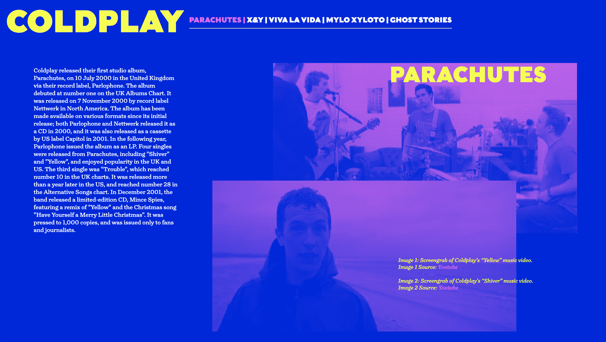

Nat Thomas | Interaction Foundations | Final Review Select Projects

Postcard Triptych
Responsive triptych of three classic quotes from the show Sense8.

Microsite
Informational website about a select few of Coldplays albums inspired by their neon presentation in their tours. Directed by Mike Ahn.